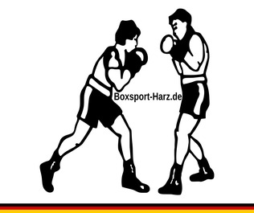

Das Aufwärmen
Das Aufwärmtraining ist der wichtigste Bestandteil Ihres Trainings! Wer denkt, hier Zeit sparen zu können, kann ganz schnell richtig viel Zeit haben. Nämlich dann, wenn er nach einer Verletzung überhaupt nicht mehr trainieren und arbeiten kann. Dies ist besonders am Anfang sehr ärgerlich, da sich die mühsam erarbeiteten Trainingserfolge ganz schnell wieder in Luft auflösen und man sich praktisch umsonst gequält hat. Von den Schmerzen und dem Ärger mal ganz abgesehen. Nehmen Sie die nachstehenden Hinweise also unbedingt ernst! Das Aufwärmtraining kann man in der Regel frei gestalten, so wie man möchte.
Wichtig ist, dass Sie die Muskeln und Muskelgruppen warm machen, die Sie später trainieren wollen. Außerdem dient das Aufwärmen, wie der Name schon vermuten lässt, dazu, den Körper auf Betriebstemperatur zu bringen und eine bessere Versorgung der zu trainierenden Muskelgruppen mit Nährstoffen und Sauerstoff vorzubereiten. Nach dem Aufwärmtraining sollten Sie die entsprechenden Muskeln auch noch dehnen. Dies minimiert das Verletzungsrisiko erheblich. Wie könnte ein Aufwärmtraining aussehen? Setzen Sie beim Aufwärmen niemals Ihre volle Kraft ein. Der Krafteinsatz sollte maximal 50 % von dem betragen, das Sie zu leisten in der Lage sein sind. Beginnen Sie mit einem lockeren Schatten-Boxen. Nach 5 Minuten springen Sie 10 Minuten Seil und machen im Anschluss ein paar leichte Serien Liegestütze. Sie können diese Übungen gern auch variieren. Wichtig ist nur, nicht übernehmen. Ebenso wichtig ist die Cool-Down-Phase am Ende des Trainings. Sie sollten nie nach einem schweren Training, zum Beispiel am Sandsack, direkt unter die Dusche gehen. Geben Sie Ihrem Körper die Chance, sich darauf einzustellen, dass sich die geforderte Leistung nun wieder verringert. Sie können Ihre Trainingseinheit mit einem lockeren Seilspringen oder Schatten-Boxen ausklingen lassen.
Wichtig ist, dass die leichtesten Übungen ganz zum Schluss durchgeführt werden. Achten Sie auf eine gründliche Aufwärmphase, bevor Sie das eigentliche Training beginnen. Genau wie beim Fußball oder Basketball werden auch beim Boxen bestimmte Muskelgruppen extrem strapaziert. Zudem gehört eine ordentliche Erwärmung als Muskellockerungsübung zu jeglicher sportlicher Betätigung, welche über eine bestimmte Zeit ausgeübt werden soll. Achten Sie auch bei Maximalkraftübungen auf eine angemessene Erwärmung. Auf Grund dieser können die bis zu 10% mehr Gewichte heben und verbessern so auch den Trainingseffekt, während sie Verletzungsrisiken minimieren.
